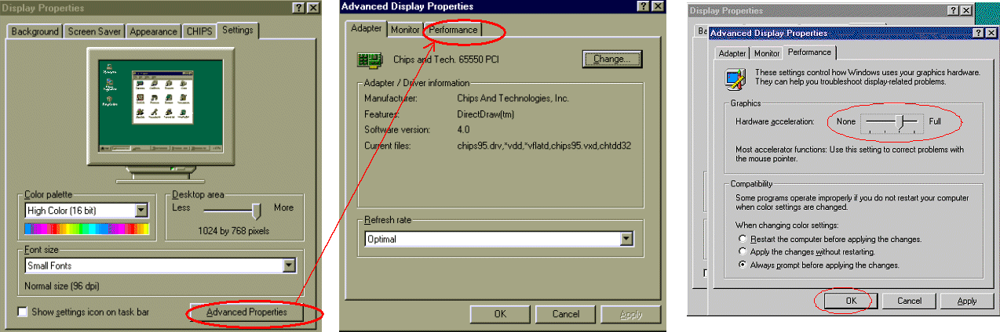
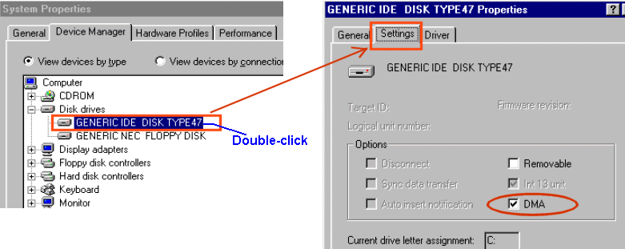

Service History
Subject: NS-6040 HDD corrupted
Handler Model: NS-6040 (ASE(M))
Controller: SRC520
Date: 20 Jul 2011
Symptom
NS6040 Hard disk (win95) corrupted.
Action
1. NS6040 Hard disk corrupted.
2. Customer does not have clone image and recovery CD.
3. Unable to install MMI and SPEL as they do not have the CD.
4. Upgrade to Win98 with MMI and SPEL but backup is old version. Unable to restore.
5. Advise to carry out manual recovery of handler data.
6. Confirm original 2.5" 20 GB HDD spoilt, use another 3.5" 20GB HDD ok, unable to motor on due to T-4216 Servo real time command overrun.
7. Unable to detect 20GB and in the process of HDD swap, controller PSU burnt as 230V supply was used.
8. Monday to install new PSU and continue troubleshoot.
Before you swap CU or DU.
Can you check the following:
1) “Hardware acceleration” is reduced by 1 level from Full

2) Check that Harddisk’s DMA is selected

But for item 2), even if “DMA” already ticked, you can try to un-tick it to see if it will solve the "T-4216" error "Servo real-time command overrun." Error.
Just give a try because I saw the photo of the 3.5” HDD is ATA133 and not the usual ATA66 or ATA100 that we are using, so I am not sure if DMA setting will have effect.
(Hardware compatible ?)Base on the CPU Board photo you sent, the printing shows that it is a Pentium 1 board (P5/6x86) and the BIOS clock is DALLAS so CPU speed is 200 or 233MHz, but I am not sure the memory controller on the CPU Board can support an ATA133 HDD as normal.
? PSU replaced and upon motor on, T-4216 "Servo real-time command over-run" for all robots.
? Motor ??? and Power ??? can be seen from SPEL bottom-right the task bar.
? Restore SPEL System file from any know good handler, same T-4216
? Used HDD from known good handler, same T4216
? Used existing HDD to try on known good handler, no more T4216.
? Existing HDD (NST-25) recovery process should be ok and not the cause of T4216.
? Swap in NST-26 control unit. Able to motor on.
? NST-26 CU with NST-25 HDD. Able to motor on.
? NST-25 CU with NST-26 HDD. T4216 error.
? NST-25 CU with NST-26 CPU board and NST-25 HDD. Able to motor on.
? NST-25 uses Pentium I P5/6x86 and Maxtor ATA100 HDD with windows 98 recovery for PI board as original Fujitsu HDD damaged.
? NST-26 uses PC-686BX and ok with NST-25 and NST-26 HDD.
? Suspect NST-25 CPU board not compatible with Maxtor ATA100 HDD and communication/data synchronization between CPU Board and HDD led to T4216.
Customer has to either buy compatible HDD for P5/6x86 or upgrade CPU board for current HDD.
Cause
Finally encounter that this NST 6040 # 25, CPU Board cannot support the "Maxtor" HDD, is too high end for this CPU Board on this NS-6040.